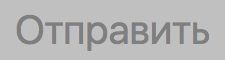

Тесты
Эпизод 2 — Атака клонов
Много лекций назад...
Эпизод 1 — Скрытая угроза
Mocha
describe('Note id generator', function() { it('should cast to lower case', function () { var actual = generateNoteId('HellO'); assert.equal(actual, 'hello'); }); it('should replace spaces to `-`', function () { var actual = generateNoteId('mu ha ha'); assert.equal(actual, 'mu-ha-ha'); });});mocha
$ npm install mocha --save-dev$ mocha generateNoteId-test.jsNote id generator ✓ should cast to lower case ✓ should replace spaces to `-` 2 passing (8ms)
White box
Тестовые кейсы
- +1 тест на каждое действие
- +1 тест на исключение
- +1 тест на ветвление
Тест должен содержать одну логическую проверку которая не повторяется в других тестах*
[*] в идеале ;)Задача
«Форма создания заметки»
Требования
-
Заголовок
Не пустой
Менее 100 символов
-
Текст
Не пустой
Менее 1000 символов
Кнопка

DEMO
Модульные тесты
Кнопка недоступна, если
форма пустая
заголовок не заполнен
текст не заполнен
заголовок больше 100 символов
текст больше 1000 символов
describe('Note form', function () {
var $save;
var $name;
var $text;
before(function () {
$save = $('#save');
$name = $('#name');
$text = $('#text');
});
});
function inputTextTo($el, text) {
$el.val(text).trigger('input');
}
function inputTextTo($el, text) {
$el.focus();
document.execCommand(
'insertText', false, text);
}
it('when name and text is valid', function () {
inputTextTo($name, 'some value');
inputTextTo($text, 'some value');
$save.prop('disabled').should.be.false;
});
Запуск тестов на клиенте
<head>
<!-- подключаем стили Mocha -->
<link
rel="stylesheet"
href="path/to/mocha.css">
<body>
<!-- подключаем библиотеку Mocha -->
<script src="path/to/mocha.js"></script>
<!-- настраиваем Mocha -->
<script> mocha.setup('bdd'); </script>
<!-- подключаем файл с тестами -->
<script src="/form.test.js"></script>
<!-- элемент в котором будут результаты тестов -->
<div id="mocha"></div>
<!-- запускаем Mocha -->
<script> mocha.run(); </script>
DEMO
тесты запускаются в контексте страницы
быстро выполняются
запускать вручную
следить за результатом глазами
⬇
Плохо автоматизируется
PhantomJS
PhantomJS
PhantomJS is a headless WebKit scriptable with a JavaScript API.
mocha-phantomjs
$ npm install -g mocha-phantomjsАдаптируем запуск
<!-- запускаем Mocha -->
<script>
window.mochaPhantomJS ?
mochaPhantomJS.run() :
mocha.run();
</script>
$ mocha-phantomjs http://localhost:5000/form
Note form
save button disabled
✓ when form is empty
✓ when text is empty
✓ when name is empty
✓ when name is long
✓ when text is long
save button enabled
✓ when name and text is valid
6 passing (8ms)
Скриншоты
function takeScreenshot() {
if (!window.callPhantom) {
return;
}
var fileName = 'note-' + new Date().getTime();
callPhantom({ screenshot: fileName });
}
Скриншоты
afterEach(function () {
if (this.currentTest.state == 'failed') {
takeScreenshot();
}
});
тесты запускаются в контексте страницы
быстро выполняются
удобно автоматизировать
не проверяем поведение в различных браузерах
Сценарий
Переходим на страницу создания заметки
⬇
Вводим название и содержание заметки
⬇
Отправляем форму
⬇
Попадаем на список заметок, где новая заметка - последняя
casperjs
$ npm install -g casperjs
casper.test.begin(
'Send form',
3,
function (test) { /* test */ }
);
casper
.start('http://localhost:5000/form')
.then(function () {
this.fill('form#create-note', {
name: 'new-note',
text: 'some text of new note'
}, true);
}) .then(function () {
test.assertUrlMatch(/\/notes$/,
'should redirect to `/notes`');
}) .then(function () {
var list = this.getElementsInfo('li');
test.assert(list.length > 3,
'should new note not exists');
var newNote = list.pop();
test.assertEqual(newNote.text,
'new-note', 'should success add');
}) .run(function () {
test.done();
});
casper.test.begin('Send form', 3, function (test) {
casper
.start('http://localhost:5000/form')
.then(function () {
this.fill('form#create-note', {
name: 'new-note',
text: 'some text of new note'
}, true);
})
.then(function () {
test.assertUrlMatch(/\/notes$/, 'should redirect to `/notes`');
})
.then(function () {
var list = this.getElementsInfo('li');
test.assert(list.length > 3, 'should new note not exists');
var newNote = list.pop();
test.assertEqual(newNote.text, 'new-note',
'should success add in and of list');
})
.run(function () {
test.done();
});
});
$ casperjs test bundles/form/form.casper.test.jsDEMO
Скриншоты
casper
.start('http://localhost:5000/form')
.then(function () {
this.captureSelector('note-page.png', 'body');
})
.run(function () {
test.done();
});
});
быстро выполняются
Только PhantomJS и SlimerJS
Можем пропустить баги из настоящих браузеров

http://docs.seleniumhq.org/download/
Selenium Standalone Server
$ java -jar selenium-server-standalone-2.53.0.jarWebdriverIO
$ npm install webdriverioStandalone Mode
var webdriverio = require('webdriverio');
var options = {
desiredCapabilities: {
browserName: 'firefox'
}
};
var client = webdriverio
.remote(options)
.init();
client
.url('http://localhost:5000/form')
.setValue('#name', 'Selenium standalone')
.setValue('#text', 'some text')
.submitForm('#save') .getText('li') .then(function (notes) {
var actual = notes.pop();
console.log(actual);
})
.end();$ node bundles/form/form.standalone.jsDEMO
тесты запускаются внастоящих браузерах
не параллелятся
promise-интерфейс
WDIO mode
describe('Notes form', function () { it('should success add new note', function () { browser.url('http://localhost:5000/form'); browser.setValue('#name', 'Selenium wdio'); browser.setValue('#text', 'some text'); browser.submitForm('#save'); var notes = browser.getText('li'); var actual = notes.pop(); actual.should.be.equal('Selenium wdio') }); });./node_modules/.bin/wdio config
⬇
wdio.conf.js
./node_modules/.bin/wdioDEMO
тесты запускаются внастоящих браузерах
Параллельный запуск
Синхронный интерфейс
Может не быть браузеров
Selenium Grid
saucelabs
Зайти на https://github.com/urfu-2015
⬇
Ввести `slide` в поле поиска
⬇
Проверить что вернулось три репозитория
it('should search repo', function () { browser.url('https://github.com/urfu-2015'); browser.setValue('input[name="query"]', 'slides'); browser.waitUntil(function () { return browser .getUrl() .then(function (url) { return /query=slides/.test(url); }); }); var repos = browser.getText('h3.repo-list-name'); repos.should.deep.equal([ 'webdev-slides', 'javascript-slides', 'verstka-slides' ]); })soucelabs.conf.js
{
...,
host: 'ondemand.saucelabs.com',
user: 'zhigalov',
key: 'XXXXX_XXXXX_XXXXXX_XXXXX'
}
./node_modules/.bin/wdio soucelabs.conf.js
DEMO
тесты запускаются внастоящих браузерах
Параллельный запуск
Синхронный интерфейс
Удаленно во многих браузерах
Gemini
Тестирование
«на глазок»
Gemini
Установка
npm install gemini
Запуск
gemini test [путь до директории с тестами]
Конфигурация
rootUrl: http://yandex.com
browsers:
PhantomJS:
desiredCapabilities:
browserName: phantomjs
Конфигурация
rootUrl: http://yandex.com
gridUrl: http://selenium.example.com:4444/wd/hub
browsers:
chrome:
desiredCapabilities:
browserName: chrome
version: "45.0"
firefox:
desiredCapabilities:
browserName: firefox
version: "39.0"
Пример теста
var gemini = require('gemini');
gemini.suite('init', function(suite) {
suite
.setUrl('/')
.setCaptureElements('body')
.capture('plain');
});
Генерация эталонов
gemini update [путь до директории с тестами]
gemini test --reporter html [путь до тестов]
Как писать тесты на вёрстку?
Правильно тестировать блоки, а не страницы
var gemini = require('gemini');
gemini.suite('main url', function(suite) {
suite.setUrl('/');
gemini.suite('header', function (suite) {
suite
.setCaptureElements('header')
.capture('header');
}); gemini.suite('main', function (suite) {
suite
.setCaptureElements('main')
.capture('main');
});
gemini.suite('footer', function (suite) {
suite
.setCaptureElements('footer')
.capture('footer');
});
});Возможности
- Захват конкретной части страницы
- Эмуляция JS событий
- Selenium
- Пропуск тестов для выбранных браузеров
- Эмуляция действий пользователя
- Игнорирование части страницы с не постоянными данными
- Отчёт о покрытии CSS тестами